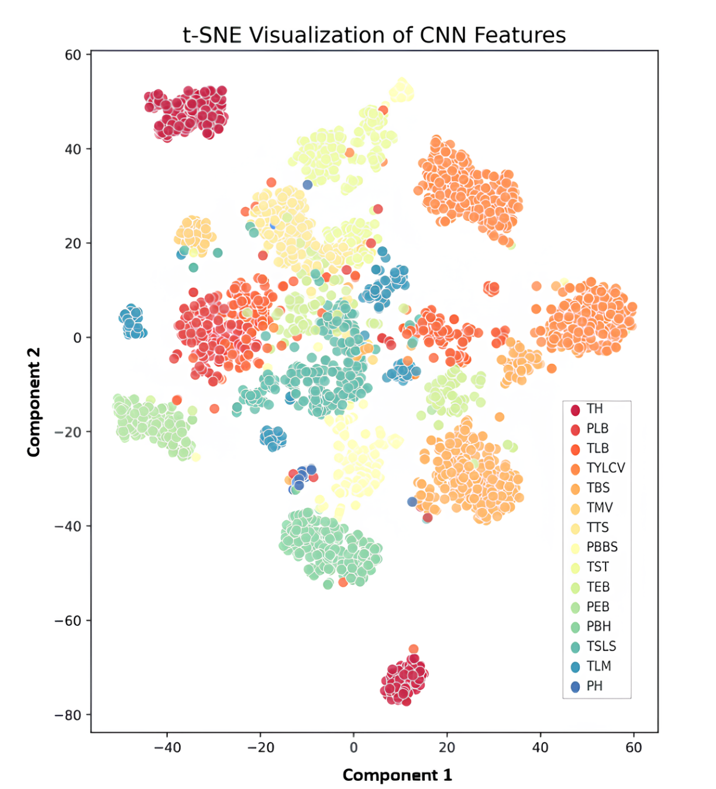
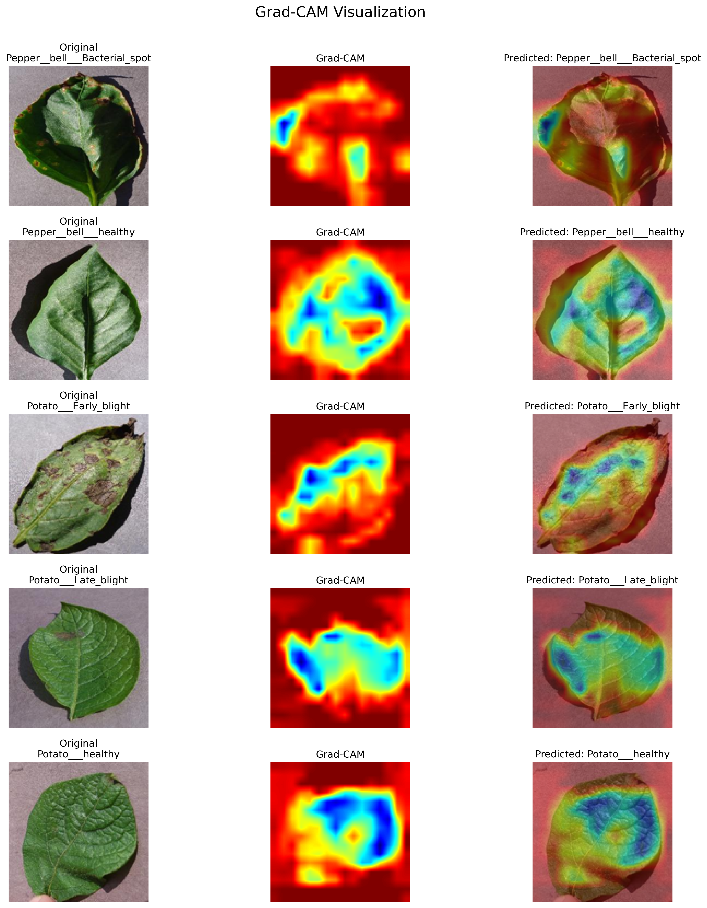

Published · Scientific Reports
PlantCLR.
Learning useful visual representations from unlabeled leaves.
The research
question.
Can contrastive pretraining improve plant disease recognition across different image conditions?
Abstract / research summary
PlantCLR studies contrastive self-supervised pretraining for plant disease classification. A ConvNeXt-Tiny encoder learns from augmented views of unlabeled leaf images, followed by supervised fine-tuning in the target domain with a lightweight classification head. The published evaluation reports strong results on PlantVillage and Cassava. Feature visualizations and Grad-CAM complement the classification metrics by examining representation structure and model attention.
Inside the
method.
- 01
Learn from unlabeled images
Contrastive pretraining brings representations of two augmented views of the same leaf closer together.
- 02
Adapt to the target domain
A supervised fine-tuning stage adapts the pretrained encoder and classification head to disease labels.
- 03
Inspect the evidence
Accuracy and F1 are paired with t-SNE and Grad-CAM analyses.
What the
results show.
Strong performance on both datasets supports the value of the learned representations under the paper’s evaluation protocol. The Cassava result is particularly relevant to the study of more variable leaf imagery.
| Dataset | Accuracy | F1-score |
|---|---|---|
| PlantVillage | 99.10% | 99.04% |
| Cassava | 96.83% | 96.70% |
Published results after target-domain fine-tuning. The complete pipeline uses labels during downstream classification.
Research in view.
Select a figure to explore it.
 View full figure
View full figure 

View full figure

View full figureThe complete
work.
PlantCLR: Contrastive Self-Supervised Pretraining for Generalizable Plant Disease Detection
Scientific Reports 16, 10550 (2026). Published 31 March 2026. DOI: 10.1038/s41598-026-45684-x.
Results follow the final published paper. Additional visualizations come from the author’s PlantPathology repository.